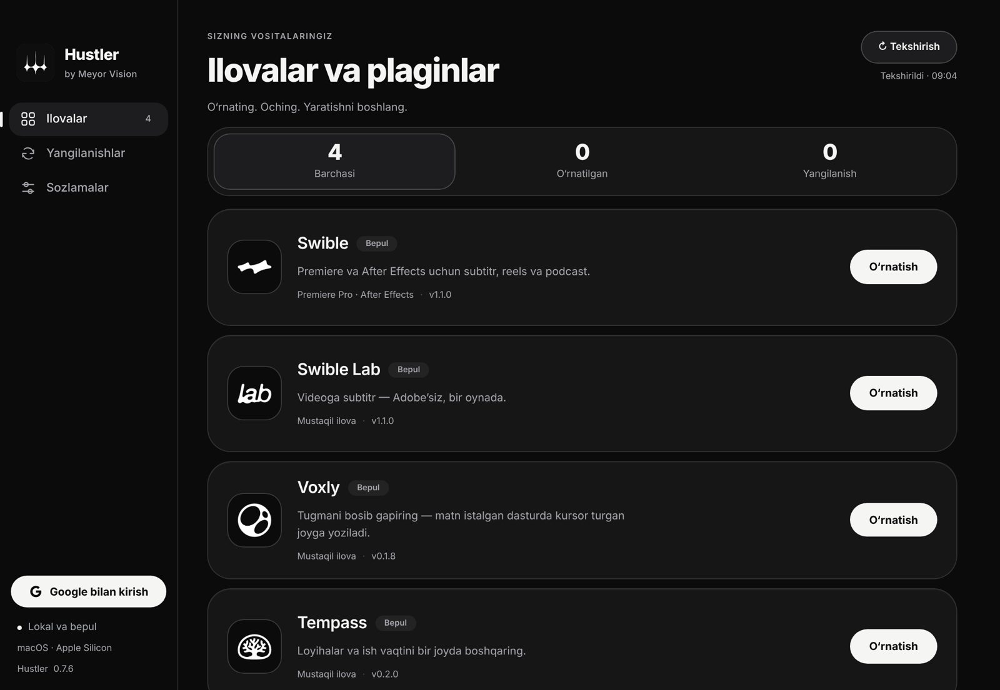
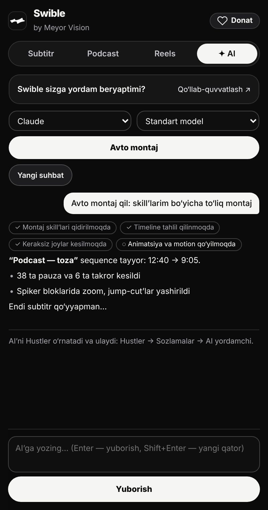
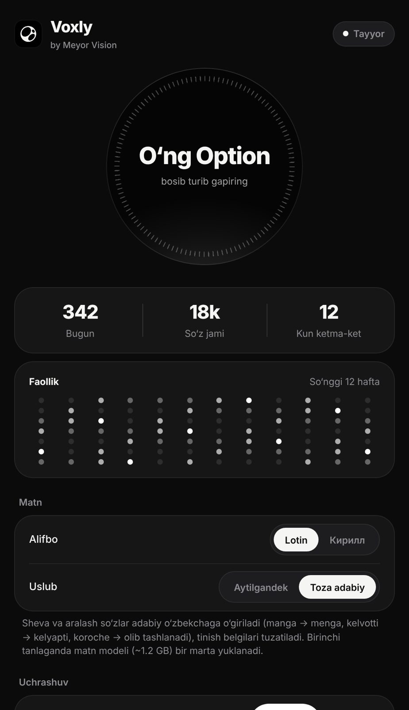

HUSTLER · BY MEYOR VISION
Montajni AI qiladi.
Siz yaratasiz.
Swible Premiere va After Effects’da kesadi, tartiblaydi, subtitr va motion qo‘yadi — sizning AI’ingiz va o‘z montaj uslubingiz bilan. Voxly gapingizni yozadi, Tempass vaqtingizni o‘lchaydi. Hammasi bepul va kompyuteringizda.
Hustler · bepul · O‘rnatish qo‘llanmasi (rasmlar bilan) →

Claude Code, Codex yoki Google Antigravity — Hustler o‘zi o‘rnatadi va ulaydi.
Documents’dagi montaj skill’laringiz bo‘yicha ishlaydi.
Video va ovoz kompyuterdan chiqmaydi. Akkaunt shart emas.
Shevalar, aralash nutq, lotin va kirill.
 Premiere Pro va After Effects plagini
Premiere Pro va After Effects plaginiSwible
To‘liq avto montaj: keraksiz joylarni kesadi, kliplarni tartiblaydi, zoom, subtitr va motion qo‘yadi.
- Avto montaj Bir tugma: tahlil → kesish → tartib → zoom → subtitr → markerlar. Natija yangi sequence, asl nusxa o‘zgarmaydi.
- Sizning AI’ingiz Chatda Claude, Codex yoki Antigravity (Gemini). O‘z obunangiz, o‘z skill’laringiz.
- Motion uslubingiz After Effects’da so‘zma-so‘z matn, kirish/chiqish, bounce, glow — sizning AE loyihangizdan o‘lchangan harakat tili.

 Adobe’siz oddiy muharrir
Adobe’siz oddiy muharrirSwible Lab
Videoni oching — subtitr, kesish, reels, dublyaj va toza ovoz bilan MP4. Bir oynada.
- Bir tugmali zanjir “Tozala → MP4”: subtitr, pauza va “eee”lar kesiladi, ovoz tozalanadi.
- Matn orqali kesish So‘zni belgilang — videodan ham kesiladi.
- Reels Belgilangan joy yoki AI tanlagan lahzalar — vertikal MP4.

 Ovozdan matn — istalgan dasturda
Ovozdan matn — istalgan dasturdaVoxly
Tugmani bosib gapiring — matn kursor turgan joyga yoziladi. O‘zbekcha, shevalar bilan, internetsiz.
- Istalgan joyda Telegram, Word, brauzer, Premiere — kursor qayerda bo‘lsa.
- Ovozli buyruqlar “vergul qo‘y”, “yangi qator”, “o‘chir”, “Telegram’ni och”.
- Shaxsiy lug‘at Ism va atamalaringizni to‘g‘ri yozadi.

 Montaj vaqtini o‘zi o‘lchaydi
Montaj vaqtini o‘zi o‘lchaydiTempass
Premiere’da loyiha ochildimi — vaqt boshlanadi. Chalg‘ish, diqqat foizi, soatbay summa va PDF hisobot.
- Start tugmasisiz Swible ochiq loyihani Tempass’ga aytadi; boshqa fayl — boshqa loyiha.
- Chalg‘ish hisobi Montaj paytida Telegram yoki brauzerda o‘tgan vaqt.
- Hisobot va PDF Ish vaqti, tanaffus, diqqat %, soatbay narx bo‘yicha summa.

Uch qadamda
- Hustler’ni o‘rnating
Windows yoki Mac uchun bitta dastur.
- Ilovani tanlang
Swible, Swible Lab, Voxly, Tempass — “O‘rnatish”.
- AI’ni ulang
Sozlamalar → AI yordamchi. Keyin “Avto montaj”.
Hustler · bepul · O‘rnatish qo‘llanmasi (rasmlar bilan) →